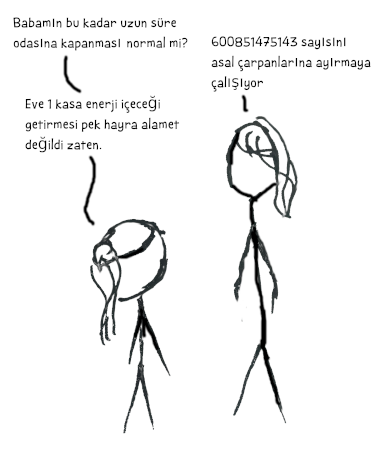

(Euler 3) Asal Çarpanlara Ayırma
Project Eulerdeki 3 numaralı problem şu şekilde; \(13195\) sayısının asal çarpanları \(5\), \(7\), \(13\) ve \(29\)'dur.
\(600851475143\) sayısının en büyük asal çarpanı nedir.
Tavsiye edilen okuma listesi;
Sadece kendisine ve bire tam bölünen sayılara asal sayı diyoruz. Sayıları, asal sayıların çarpımı şeklinde göstermeye de asal çarpanlara ayırma diyoruz. Biz bunları 8. sınıfta öğrendik, Bu soru euler problemi olabilmek için araya nüfuzlu tanıdık mı sokmuş dediğinizi duyar gibiyim. Ancak, burada hayati bir detay var. \(600851475143\) sayısı büyük bir sayı. Daha büyük sayılar da var, ama bu da bir hayli büyük. Bu sayıyı kağıt kalemle asal çarpanlara ayırmak muhakkak uzun sürecektir.

Eğer doğru şekilde yapılmazsa, bu kadar büyük bir sayıyı asal çarpanlara ayırmak bilgisayarla bile zor olacaktır. Bu nedenle, doğru şekilde yapacağız.
Bir sayıyı asal çarpanlarına ayırmak için, öncelikle o sayıyı asal çarpanlarına ayırmaya yetecek kadar asal sayı bilmemiz gerekiyor. Malesef \(600851475143\) kadar büyük bir sayıyı asal çarpanlara ayırmak için bize ne kadar asal sayı gerekeceğini bilmiyoruz. Ama bir sayının en büyük asal çarpanının o sayının yarısı kadar olabileceğini biliyoruz. Bu nedenle, en kötü durum senaryosuna göre \(300425737572\) sayısına kadar olan asal sayıları hesaplamamız gerekecek. Bunlar hala çok büyük rakamlar.
Ama, matematikçiler zeki insanlar, büyük sayıları asal çarpanlarına ayırmanın kolay yolları bulmuş olmaları gerekmez mi? Evet, muhtemelen bulmuşlardır. Ancak, hem biz bu yöntemleri bilmiyoruz, hem de bu yöntemleri bilmek bu problemin eğlencesini kaçırabilir, o yüzden matematikçiler her ne bulmuşlarsa, bilmezlikten gelebiliriz. Ama, Eratosten Kalburu yöntemini bulan Eratosten, teknik olarak matematikçi sayılmaz, bu nedenle bu yöntemi kullanabiliriz. Bu yöntemi anlatmanın yeri ve zamanı burası olmadığı için, algoritmaya aşina olmayanların, konuyu Google'dan araştırıp geri gelmesini bekleyeceğiz. Siz gidin gelin, biz buradayız.
Ben bu algoritmayı Python diline şu şekilde uyarladım;
def basit_sieve(limit): sieve_limit = sqrt(limit) primes = [] candidates = range(2, limit+1) while len(candidates) > 0: next_prime = candidates.pop(0) primes.append(next_prime) candidates = [x for x in candidates if x % next_prime != 0] if next_prime > sieve_limit: primes.extend(candidates) candidates = [] return primes
Çok karmaşık bir görüntü vermemek adına, yapılabilecek bir takım optimizasyonlardan imtina etmeye karar verdim. Eğer Eratosten Kalburu yöntemini yeterince kavradıysanız, kodlar yeterince açık gelecektir diye ümit ediyorum.
basit_sieve yöntemimiz yeterince basit, ancak, hala ciddi bir sorunumuz var. Bu fonksiyonu kullanırsak, \(300425737572\)
sayısına kadar olan asal sayıları tek seferde tespit etmemiz gerekecek. Ama hem o kadar çok asal sayıyı hesaplamak ciddi bir iş,
hem de kaç tanesine ihtiyaç duyacağız bilmiyoruz bile. Bu nedenle, fonksiyonu biraz modifiye edeceğiz.
def gelismis_sieve(limit, known_primes): if not known_primes: return basit_sieve(limit) sieve_limit = sqrt(limit) primes = known_primes[:] candidates = range(known_primes[-1]+1, limit+1) for prime in known_primes: if prime > sieve_limit: primes.extend(candidates) candidates = [] break candidates = [x for x in candidates if x % prime != 0] while len(candidates) > 0: next_prime = candidates.pop(0) primes.append(next_prime) candidates = [x for x in candidates if x % next_prime != 0] if next_prime > sieve_limit: primes.extend(candidates) candidates = [] return primes
Bu fonksiyon biraz daha karmaşık, o yüzden anlatmaya hacet görüyorum. Asal sayıları bulmak için yine Eratosten Kalburu
yöntemini kullanıyoruz. Ancak bu sefer önemli bir fark var. Bu fonksiyona daha önceden tespit ettiğimiz asal sayı listesini ve
yeni asal sayı üst limitini verdiğimizde, kaldığı yerden kalburu işletmeye devam edebiliyor. Bunu yapabilmek için, bilinen
asal sayılar listesinin sonundan başlayacak şekilde, verilen üst sınıra kadar asal sayı olmaya aday sayıların bir listesini
oluşturuyoruz. Bu adayların listenin içinde, bildiğimiz asal sayıların katı olan sayıları temizliyoruz. Fonksiyonun devamı,
basit_sieve ile tamamen aynı. gelismis_sieve sayesinde, asla ihtiyaç duymayacağımız asal sayıları tespit etme yükünü üstümüzden atmış olacağız.
Böylelikle, işin hüner isteyen kısmını halletmiş olduk diye düşünüyorum. Geriye sadece, asal çarpanlara ayırmak kalıyor. Onun için de aşağıdaki fonksiyonu kullanacağız. Satır aralarına açıklayıcı notlar ekledim. Ek bir açıklamaya gerek görmüyorum.
def prime_products(n): "İlk etapta hangi sayıya kadar asal sayıları tespit edeceğiz" prime_limit = 50 "Asal sayıları tespit et" primes = gelismis_sieve(prime_limit,[]) "Asal sayı listesinde hangi sırada olduğumuzu tutmak için" prime_index = 0 "Bulduğumuz asal çarpanlar bu listeye girecek" prime_products = [] while n != 1: "Elimizde 1 kalana dek, elimizdeki sayıyı asal sayılara böleceğiz." if prime_index > (len(primes)-1): "Elimizde yeterince asal sayı kalmamışsa," "bu ife giriyor, ve yeni asal sayılar üretiyoruz." "Üreteceğimiz asal sayıların üst limiti her seferinde 2ye katlanacak" "Böylece, sık sık yeni asal sayılar üretmek için vakit harcamayacağız." prime_limit = prime_limit * 2 primes = gelismis_sieve(prime_limit, primes) "Kontrol edeceğimiz asal çarpan" prime = primes[prime_index] "divmod, tek bir fonksiyonda hem bölme işlemi sonucunu, hem de kalanı veriyor" div, rem = divmod(n, prime) if rem == 0: "Eğer tam bölündüyse, asal çarpanlar listesine ekliyoruz" prime_products.append(prime) "Bölme işleminin sonucundan, bölmeye devam edeceğiz." n = div else: "Eğer bölme kalanlı ise, bir sonraki asal sayıdan denemeye devam edeceğiz" prime_index += 1 return prime_products
Bu fonksiyonu problemde verilen \(600851475143\) sayısı ile çalıştırdığınızda, [71, 839, 1471, 6857] sonucunu elde edeceğiz.
Böylece, sonucu 6857 olarak bulmuş oluyoruz, ki, gayet hayal kırıklığına uğratıcı bir durum. Ben çok daha büyük bir sayıya
ulaşmayı ya da \(600851475143\) sayısının asal sayı çıkmasını bekliyordum. Her neyse, siz bu fonksiyonu 1139384427936463 gibi
çok daha büyük bir sayıda deneyebilirsiniz, yine de işleyecektir.
Burada sadece 40bit bir sayıyı asal çarpanlarına ayırdık. Şu an internetimizin önemli bir kısmının güvenliği 1024 bit (309 haneli sayıları düşünün) RSA şifrelemeye bağlı, ve insanlık tarihinin şu ana kadar asal çarpanlara ayırabildiği en büyük sayı 768bit RSA sayısı (232 haneli bir sayı düşünün). Rivayet odur ki, bu işlemi tamamlamak sadece 4 yıl sürmüş. Bu kadar büyük sayıların önünde, insan hayattaki yerini düşünüp bir ah çekiyor.
Gelecek Problem
Palindrom bir sayı, hem baştan hem sondan aynı şekilde okunur. İki adet iki basamaklı sayının çarpımı ile elde edilebilecek en büyük palidrom \(9009 = 91 × 99\).
3-basamaklı sayıların çarpımı ile elde edilebilecek en büyük palindromu bulunuz.